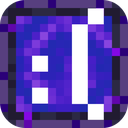

NEOSkins Viewer
El visor 3D de skins de NEOLauncher, para tu web o tu launcher.
Descargas
neoskins-viewer.standalone.js
Archivo único con todo dentro. Para una etiqueta script.
neoskins-viewer-latest.tgz
Paquete npm con tipos de TypeScript. Para proyectos con bundler.
neoskins-client.js
Solo el cliente de la API, sin visor ni dependencias.
neoskins-viewer.js
Módulo ES del visor, sin dependencias. Necesita neoskins-client.js al lado.
Uso rápido
<div id="skin" style="width: 300px; height: 420px"></div>
<script src="neoskins-viewer.standalone.js"></script>
<script>
const viewer = new NeoSkins.NeoSkinViewer("#skin");
const client = new NeoSkins.NeoSkinsClient({ baseUrl: "https://neobeta.miguelki.ovh" });
viewer.loadPlayer(client, "Notch");
</script>